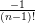
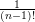

3.2 Machine Geometry
3.2.1 Single Elements
Description The Single Elements input block defines the name and type of linear and nonlinear
elements, the inverse bending radius or multipole strength respectively, and the strength and length of the
elements. Linear and nonlinear elements are distinguished by length; linear elements have a nonzero length
and nonlinear elements have zero length. Both kinds of elements can appear in the input block in arbitrary
order. The input line has a different format for linear and nonlinear elements. Moreover, the multipoles, being
a set of nonlinear elements, are treated in a special way. The maximum number of elements is set as a
parameter (see Appendix B.2).
Keyword SING
Number of data lines variable
Format See the following three sections.
3.2.1.1 Linear Elements
Description
Each linear single element has a name, type, inverse bending radius, focusing and a nonzero
length.
Format
name type ϱ−1 K length
-
name
- May contain up to sixteen characters
-
type
- As shown in the table 3.2
-
ϱ−1
- Inverse bending radius in m−1
-
K
- Focusing strength in m−2
-
length
- Magnet length in meters
Table 3.2: Different Types of Linear Elements
|
|
|
|
| type | ϱ−1 | K | description |
|
|
|
|
| 0 | 0 | 0 | drift length magnet |
| 1 | X | 0 | horizontal (rectangular) bending |
| 2 | 0 | X | quadrupole (– focusing, + defocusing) |
| 3 | X | 0 | horizontal (sector) bending |
| 4 | X | 0 | vertical (rectangular) bending |
| 5 | X | 0 | vertical (sector) bending |
| 6 | X | X | horizontal combined function magnet |
| 7 | X | X | vertical combined function magnet |
| 8 | X | 0 | edge focusing |
|
|
|
|
| |
Remarks
- For the horizontal plane the bending radius is defined to be negative (ϱ < 0). This is different
from other programs like MAD [21].
- K < 0 corresponds to a horizontal focusing quadrupole.
- For the length of an edge focusing element (type=8) the same value must be used as for the
corresponding bending magnet. A sector bending magnet is transformed into a rectangular
magnet with an edge focusing element of positive length on either side, while for the opposite
transformation a negative length is required.
- It is important to note that the splitting of a rectangular magnet, which is sometimes necessary
if multipole errors are to be introduced, does change the linear optics. It is therefore advisable
to replace the rectangular magnet with a sector magnet, which can be split without affecting the
linear optics, and make an overall transformation into a rectangular magnet via edge focusing
elements. Do not forget to use the total length of dipole as the length of the edge focusing
element.
3.2.1.2 Nonlinear Elements
Format
name type Kn–strength r.m.s.–strength length
-
name
- May contain up to sixteen characters
-
type
- As shown in table 3.3
-
Kn –strength
- Average multipole strength
-
r.m.s.–strength
- Random multipole strength
-
length
- Must be = 0
Table 3.3: Different Types of Nonlinear Elements
|
|
|
| type | strength | description |
|
|
|
| 0 | – | observation point (for instance |
| | | for aperture limitations) |
|
|
|
| 1 | b1[rad ⋅ m0] | horizontal bending kick |
| –1 | a1 | vertical bending kick |
|
|
|
| 2 | b2[rad ⋅ m−1] | normal quadrupole kick |
| –2 | a2 | skew quadrupole kick |
|
|
|
| | | |
|
|
|
| 10 | b10 [rad ⋅ m−9] | normal 20th pole |
| –10 | a10 | skew 20th pole |
|
|
|
| |
Remarks
- Because the horizontal bending magnet is defined to have a negative bending radius, the sign
for normal elements is different from other programs like MAD, while skew elements have the
same sign.
- Again contrary to other programs the factor (n − 1)! is already included in the multipole strength,
which is defined as follows:
- for normal elements bn(SixTrack) = Lelementbn(MAD)
- for skew elements an(SixTrack) = Lelementan(MAD)
- Unlike in RACETRACK, the horizontal and vertical displacements do not fit into the 80 character
input lines of SixTrack. They have to be introduced in a separate Displacements of Elements input
block (see 3.2.4).
3.2.1.3 Multipole Blocks
Description
A set of normal, normal–r.m.s., skew and skew–r.m.s. errors can be combined effectively. The actual
values for the strengths have to be given in a separate Multipole Coefficient input block (see 3.3.1) which
must have the same name. To consider the curvature of dipoles which are replaced by drifts and dipole kicks
this block is used in two different ways.
Format
name type cstr cref length
- Marker for high order kick (default)
-
name
- May contain up to sixteen characters
-
type
- Must be = 11
-
cstr
- The bending strength given in the Multipole Coefficient input block ( 3.3.1) is multiplied
with this factor.
-
cref
- The reference radius given in the Multipole Coefficient input block ( 3.3.1) will be multiplied
by this factor. If it is zero the multipole block will be ignored.
-
length
- Must be = 0
- Default + dipole curvature
-
name
- May contain up to sixteen characters
-
type
- Must be = 11
-
cstr
- The bending strength [rad] of horizontal or vertical dipole.
Internally the value is set to one to allow the processing of a multipole block ( 3.3.1).
-
cref
- The length [m] of the dipole that is approximated by a kick. Internally this value is set to
one to allow the processing of a multipole block ( 3.3.1).
-
- length
- length = -1 : horizontal dipole
- length = -2 : vertical dipole
Remark
The definition of the multipole strength in a block will be given in ( 3.3.1).
3.2.1.4 Cavities
Format
name type u0 harm lag
-
name
- May contain up to sixteen characters
-
type
- Type identifier is +12 and −12 for above and below transition energy respectively.
-
u0
- Circumference voltage in [MV]
-
harm
- Harmonic number
-
lag
- Lag angle in the cavity (zero is default)
3.2.1.5 Beam–Beam Separation
Format
name type h-sep v-sep strength-ratio σ_hor2 σ_ver2 σ_lon2
-
name
- May contain up to sixteen characters
-
type
- 20
-
h-sep
- Horizontal beam–beam separation [mm]
-
v-sep
- Vertical beam–beam separation [mm]
-
strength-ratio
- Strength ratio with respect to the nominal beam–beam kick strength. This is useful, in
particular for 4D, to allow for splitting one beam–beam kick into several (longitudinally close
by) kicks.
-
σ_ hor2
- when the flag lhc = 2 is set in the BEAM block of the fort.3 file, this column represent the
horizontal σ for the strong beam [mm2]
-
σ_ ver2
- when the flag lhc = 2 is set in the BEAM block of the fort.3 file, this column represent the
vertical σ for the strong beam [mm2]
-
σ_ lon2
- this variable is for future purposes, at the present it is always equal to zero.
Remark
These beam–beam elements become active when the “Beam–Beam” input block 3.3.4 is
used.
3.2.1.6 “Phase–trombone” or matrix element
Format
name type
-
name
- May contain up to sixteen characters
-
type
- 22
Remark
These “trombone” elements become active when the “Phase Trombone Element” input block 3.3.5 is
used.
3.2.1.7 AC dipole
Format
name type ACdipAmp Qd ACdipPhase
-
name
- May contain up to sixteen characters
-
type
- Type identifier is +16 and −16 for horizontal and vertical AC dipoles respectively.
-
ACdipAmp
- Maximum excitation amplitude [Tm].
-
Qd
- Excitation frequency in units of [2 × π].
-
ACdipPhase
- Phase of the harmonic excitation in radians.
Remark
The length of the ramps and the flat top are specified in the “Displacement” block 3.2.4. The
energy introduced in the “Initial coordinates” block 3.6.2 is used to compute the deflection
angle.
3.2.1.8 Crab Cavity
Format
name type Voltage Frequency Phase
-
name
- May contain up to sixteen characters
-
type
- Type identifier is +23 and −23 for horizontal and vertical crab cavities respectively.
-
Voltage
- Crab Cavity voltage [MV].
-
Frequency
- Crab Cavity frequency [MHz].
-
Phase
- Phase of the excitation in radians.
3.2.1.9 Beam Position Monitor
Format
BPMname 0 0 0 0
-
BPMname
- Must start with “BP” and maybe followed by forteen characters.
Remark
This element dumps the coordinates of the 1st particle to the file with name BPMname. The file contains
7 columns: x,x′, y,y′, ct,δp∕p and E. Usual SixTrack units are used. Any number of BPM elements can be
used but the names must differ.
3.2.2 Block Definitions
Description In four–dimensional transverse tracking, the linear elements between nonlinear elements
can be combined to a single linear block to save computing time.
Keyword BLOC
Number of data lines variable but at least one
Format
- first data line: mper msym(1) …msym(mper) (integers)
- from second data line on: block–name {element–name}
-
mper
- Number of super–periods. The following set of blocks is considered a super–period. The
accelerator consists of mper super–periods.
-
msym(i)
- ± 1 for each super–period. If msym(i)=1, the i’th super–period will be built up in the order
in which linear elements appear in the blocks below. If msym(i)=–1, the super–period will be
built up in reverse order.
-
block–name
- The name of the block with up to sixteen characters
-
element–name
- The element names have to appear as a linear element in the list of “single elements”
( 3.2.1.1). If one line is too short to contain all the elements of a block, a line with additional
elements to the same block can be added. At least 5 (five) blanks must appear at the beginning
of the extra line so that names of blocks and names of linear elements in a block can be
distinguished.
Remarks
- When synchrotron oscillation is introduced, the linear elements can no longer be lumped into
one block, because in that case even a drift length magnet is a nonlinear element with respect
to the longitudinal plane. However, the block structure is still kept to make use of the speed–up
in case one can restrict the studies to the four–dimensional case.
- The maximum number of blocks and the maximum number of entries in each block are defined
as parameters (Appendix B.2).
- The inversion of a super–period (msym(i)= –1) is presently no longer allowed.
3.2.3 Structure Input
Description The model of the accelerator is put together by constructing a sequence of
blocks of linear elements, nonlinear elements, observation points, and possibly a cavity with the
keyword “CAV” used if this name does not appear in the list of single elements ( 3.2.1) with
type ±12. In that case, its parameters are given in the Synchrotron Oscillations input block
( 3.6.3).
Format { structure–element | CAV | GO }
-
structure–element
- Structure elements must appear as nonlinear and observation elements in the single
element list or in the list of blocks of the Block Definition input block ( 3.2.2).
-
- CAV A cavity can be introduced by a keyword “CAV”. This element does not appear in the single
element list ( 3.2.1).
-
- GO Starting point: the keyword “GO” denotes where the tracking is started and where the tracked
coordinates are recorded at each turn.
Remark Repetition of parts of the structure is indicated by parentheses with a multiplying factor N in
front of them. If the left parenthesis “(“ occurs in a line of input, the factor N is expected to be found in the
preceding characters. If the characters are blank, N is set to 1. The right parenthesis “)” signals the end of
the sequence to be repeated.
3.2.4 Displacement of Elements
Description This block allows to displace nonlinear elements in horizontal and vertical positions. With
the r.m.s. values of the horizontal and vertical displacements it is possible to achieve a displacement that is
different from element to element.
To simulate a measured closed orbit at the position of nonlinear elements, it is convenient to use
the Displacement of Elements input block instead of trying to produce a closed orbit by dipole
kicks.
Keyword DISP
Number of data lines variable
Format name xd xdrms yd ydrms
-
name
- Name of the element which is displaced
-
xd
- Horizontal displacement [mm]
-
xdrms
- R.m.s. of horizontal displacement [mm]
-
yd
- Vertical displacement [mm]
-
ydrms
- R.m.s. of vertical displacement [mm]
In the case of an AC dipole these variables are not meant for displacing this element but are used for the
following AC dipole parameters:
Format name nfree nramp1 nplato nramp2
-
name
- May contain up to sixteen characters
-
nfree
- Number of turns free of excitation at the begining of the run.
-
nramp1
- Number of turns to ramp up the excitation amplitude from 0 to ACdipAmp.
-
nplato
- Number of turns of constant excitation amplitude.
-
nramp2
- Number of turns to ramp down the excitation amplitude.
Remark In RACETRACK the displacements had been included in the Single Element input block
( 3.2.1). In SixTrack they must be given in the separate Displacement of Elements input block because of the
limited length of one line of input.